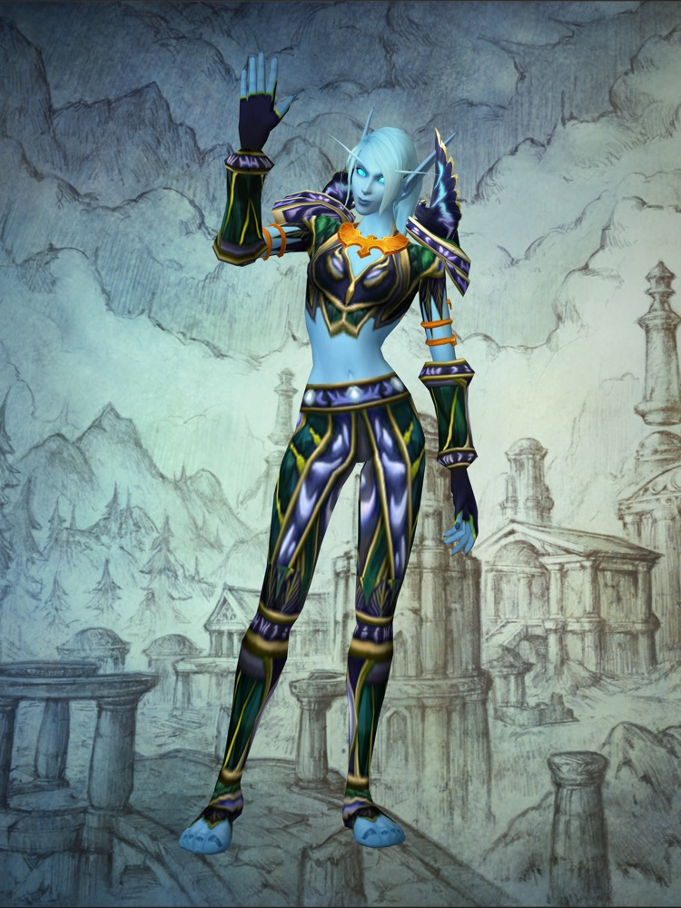

The Skyborne in Forever
The one race that is new in Forever. You can play a Skyborne on either faction, and the side you choose decides whether yours can be a mage or a shaman.
Blizzard also calls the Skyborne the shen'dorei, the hidden people. Thousands of years ago, in Blizzard's telling, a group of Highborne exiles made a pact with elemental wind spirits and built a civilization on Zephras Isle, inside Skywall, one of the elemental planes.
That arrangement has broken down. The wind spirits have vanished, the pylons that hold the island together are failing, and Blizzard says the Skyborne are "divided over what comes next". The two playable versions are the two answers to that question.
You choose a side when you make the character. Both versions start on Zephras Isle, which covers levels 1 to 12, and both can be druids, hunters, rogues and warriors. Blizzard says Skyborne druids get new forms made for the race.
The two versions
High Order Skyborne
Alliance. Descendants of the Highborne scholars of Eldre'Thalas. They decided that depending on the wind spirits had left their people vulnerable, and have returned to Azeroth "to reclaim the arcane knowledge that they have lost".
Classes: Druid, hunter, mage, rogue, warrior. Only on this side: Mage.
- Walk on Air (a button you press): Glide downward through the air for 10 seconds.
- Read Ley Line (a button you press): Activate a ley line to gain 100% increased health and mana regeneration.
- Wind Blessed (always on): 1% increased melee, ranged and spellcasting haste.
- Elemental Insight (always on): Damage to elementals increased by 5%.
Windshaper Skyborne
Horde. Descendants of the first shen'dorei to receive the wind spirits' gift. They have come to Azeroth "to solve the mystery of what became of their missing elemental mentors" and want the spirits restored.
Classes: Druid, hunter, rogue, shaman, warrior. Only on this side: Shaman.
- Walk on Air (a button you press): Glide downward through the air for 10 seconds.
- Skysight (a button you press): Receive an Elemental Blessing increasing run speed by 10%.
- Wind Blessed (always on): 1% increased melee, ranged and spellcasting haste.
- Elemental Insight (always on): Damage to elementals increased by 5%.
How the Skyborne fit in with night elves, high elves and blood elves
How they look
The character creator has ten faces, nine skin colors from sky blue to peach to darker tones, three ear lengths, nine eye colors, feather colors, four face tattoos and two body tattoos, named Zephyr and Wayfinder. One body type has 21 hair styles and 13 facial hair options; the other has 25 hair styles and six styles of earring.
How to get one
Forever itself is included with a World of Warcraft subscription or game time. The Skyborne are an extra: Blizzard lists "Access to the new Skyborne race and their Zephras Isle starting experience" as the first item in the Skyborne Heroic Pack, and the Epic Pack contains everything in the Heroic Pack. The Heroic Pack also includes Early Name Reservation, which runs from October 27 to November 3.
What Blizzard hasn't said
- What the packs cost. We could not read a price on any Blizzard page; the shop asks for a login.
- Whether the Skyborne will ever be playable without a pack.
- How often Read Ley Line and Skysight can be used, and how long they last.
- Their mount, their home city and their languages.
A race is mostly a look and a starting zone, plus four small perks called racial traits. Your class decides how you actually play, so pick the class first. Every other race, and all nine classes, come with the subscription.
Where this comes from
How we verify- Blizzard
Who the Skyborne are, the pact with the wind spirits and the crisis on Zephras Isle
Blizzard: Meet the New Skyborne - Blizzard
The name shen'dorei, "hidden people", and the failing pylons
Blizzard: Found Photos panel recap - Blizzard
Horde Skyborne can be shaman and Alliance Skyborne can be mages; both get new druid forms
Blizzard: What's Next panel recap - Blizzard
Class lists, the racial traits and what each one does, the starting zone and its level range, and the customization options
Blizzard: Meet the New Skyborne - Blizzard
The Skyborne race is part of the Skyborne Heroic Pack; Forever itself is included with a subscription
Blizzard: pre-purchase upgrades for WoW Forever - Not confirmed
Pack prices, trait cooldowns, the racial mount, home city and languages
Not in any Blizzard post we could read as of October 5. Fan sites have answers; we have not used them.
